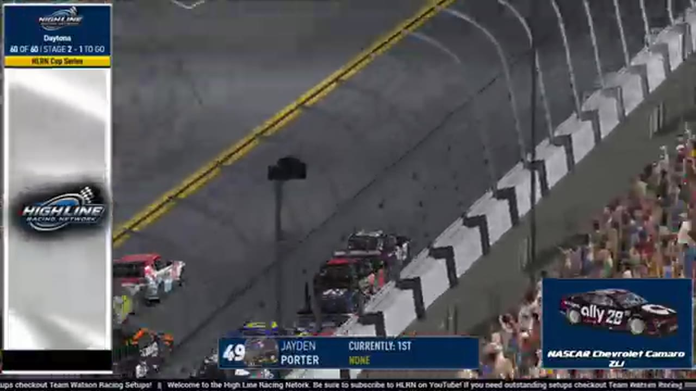

League Race at Daytona
A final-lap wreck removed the front group and opened the lane for Matt Brown, Ryan Wilson, and Ricky Miles.

- Date
- January 30, 2026
- Track
- Daytona
- Race tape
- 1h 55m
- Exact chapters
- 18
Matt Brown reaches the record
The Show's results readout records Matt Brown first, Ryan Wilson second, and Ricky Miles third at Daytona.
TAPE-SUPPORTED. Only explicitly supported positions are published; a nearby running order is never promoted into a finish.18 ways back into the race
Every link opens the complete broadcast at the reviewed timestamp. Chapter summaries are navigation claims unless explicitly marked as result-supported.
-
RESTART · OPENINGOPEN EXACT CUT
Daytona's second visit reaches the opening green
S1 / R12 at 35:23: The official Daytona race broadcast reaches the opening green, with Nick Bowman, Trevor Haley, and Brian Hayes among the first drivers named. This cut begins before the launch and stays with the first live-race call.
-
INCIDENT · MIDDLEOPEN EXACT CUT
Dave Schutt spins during Daytona's pit-cycle handoff
The first pit group exits with Juan Escamilla, Trevor Haley, and James Smith in view before Dave Schutt and the No. 29 spin. Brittany Mitchell then inherits the tracked lead while still needing fuel.
-
STAGE · MIDDLEOPEN EXACT CUT
Jerry Fassett and Jamie Shaw enter Daytona's Stage 1 scoring call
S1 / R12 at 52:31: The broadcast enters a stage-scoring discussion at Daytona with Jerry Fassett, Jamie Shaw, and John Miles in the scoring call. The clip preserves the on-air timing or points call without promoting it into a complete stage result; the accepted feature result ledger remains separate.
-
STRATEGY · MIDDLEOPEN EXACT CUT
Trevor Haley enters the Daytona pit-strategy swing
S1 / R12 at 53:44: Pit timing starts to reorganize the field, with Trevor Haley, Matt Brown, Kyle Cameron, and Chris Vincent named in the sequence. The clip is a strategy receipt from the primary Daytona broadcast, not a reconstructed scoring sheet.
-
BATTLE · MIDDLEOPEN EXACT CUT
The Daytona lead pack goes three wide
S1 / R12 at 59:42: The Daytona pack compresses three wide while Jaden Porter and Matt Brown are named on the call. The chapter keeps the live battle intact and makes no finishing-order claim.
-
INCIDENT · MIDDLEOPEN EXACT CUT
A James Smith crash signal sends Daytona back to replay
The live camera finds Ryan Wilson still on the lead lap before HLRN receives a James Smith crash indication and rewinds for a better angle. The card marks the review window without inventing contact or fault.
-
BATTLE · MIDDLEOPEN EXACT CUT
Jaden Porter anchors a four-car Darkhorse train at Daytona
HLRN identifies Jaden Porter as a Darkhorse driver and returns to a four-car team line with seven laps remaining in the stage. The window is pack-position context, not the caution replay the automated classifier had suggested.
-
STAGE · MIDDLEOPEN EXACT CUT
Stage 2 countdown at Daytona
S1 / R12 at 1:10:03: The broadcast enters a stage-scoring discussion at Daytona with Trevor Haley, Ricky Miles, and Matt Brown in the scoring call. The clip preserves the on-air timing or points call without promoting it into a complete stage result; the accepted feature result ledger remains separate.
-
STRATEGY · MIDDLEOPEN EXACT CUT
Fuel-only stops split the Daytona field
S1 / R12 at 1:11:51: Fuel-only calls split the pit cycle, with Randy Showers, Trevor Haley, Matt Brown, and Ricky Miles named in the sequence. The clip is a strategy receipt from the primary Daytona broadcast, not a reconstructed scoring sheet.
-
INCIDENT · MIDDLEOPEN EXACT CUT
The big one breaks open at Daytona
S1 / R12 at 1:14:36: A multi-car incident centers the replay call on Trevor Haley, Matt Brown, Juan Escamilla, and Randy Showers. This is a source-bounded incident window; it preserves what the booth reviews without assigning unsupported fault.
-
INCIDENT · MIDDLEOPEN EXACT CUT
Jerry Fassett spins across the No. 28 in Daytona's late wreck
HLRN reviews Jerry Fassett moving down and spinning across the nose of the No. 28 as several cars are caught in the sequence. The card keeps the visible replay and avoids turning the booth's angle review into a fault ruling.
-
STRATEGY · CLOSINGOPEN EXACT CUT
Alex Leeball takes fuel while Brian Hebert chooses four tires
With five scheduled laps remaining, Alex Leeball wins the race off pit road on fuel only while Brian Hebert's four-tire choice becomes the booth's major strategy question. No finishing position is inferred from the stop.
-
FINISH · CLOSINGOPEN EXACT CUT
Matt Brown takes Daytona after the leaders crash on the final lap
The white flag falls with Jaden Porter leading, but the front group crashes on the final lap. Matt Brown clears the wreck, takes the lead, and receives the live winner call at 1:36:26.
-
POSTRACE · CLOSINGOPEN EXACT CUT
Kyle Cameron and Trevor Haley anchor the Daytona post-race result review
S1 / R12 at 1:38:48: The reviewed live-race close has passed before this Daytona result booth review begins with Kyle Cameron, Trevor Haley, Matt Brown, and Juan Escamilla named in the discussion. It remains post-race context, not a new incident, stage, strategy call, finish, or result receipt.
-
INTERVIEW · CLOSINGOPEN EXACT CUT
Ricky Miles explains the race from the booth
S1 / R12 at 1:41:04: Ricky Miles, Brian Hebert, and Alex Leeball join the HLRN booth for a first-person race account. The interview is preserved as context and does not create a placement claim outside the accepted result ledger.
-
INTERVIEW · CLOSINGOPEN EXACT CUT
The Daytona post-race story reaches the booth
S1 / R12 at 1:42:56: A race participant joins the HLRN booth for a first-person race account. The interview is preserved as context and does not create a placement claim outside the accepted result ledger.
-
POSTRACE · CLOSINGOPEN EXACT CUT
The Daytona desk replays the finish
S1 / R12 at 1:45:07: The reviewed live-race close has passed before this Daytona finish booth review begins. It remains post-race context, not a new incident, stage, strategy call, finish, or result receipt.
-
POSTRACE · CLOSINGOPEN EXACT CUT
Matt Brown anchors the Daytona finish replay
S1 / R12 at 1:51:33: The reviewed live-race close has passed before this Daytona finish booth review begins with Matt Brown named in the discussion. It remains post-race context, not a new incident, stage, strategy call, finish, or result receipt.
All 20 official winners are backed by position-specific calls in a primary broadcast or an HLRN-authored companion episode. Complete finishing orders, points, and starts remain open until owner records are supplied.